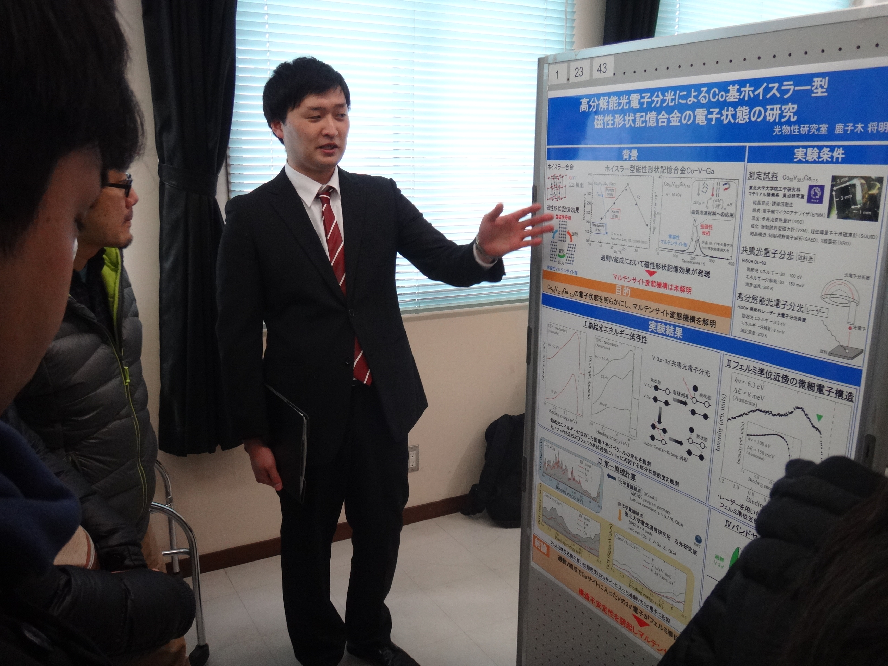
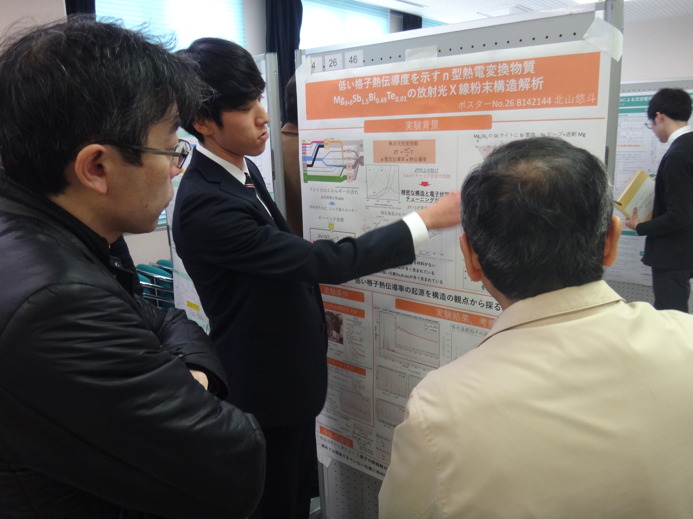
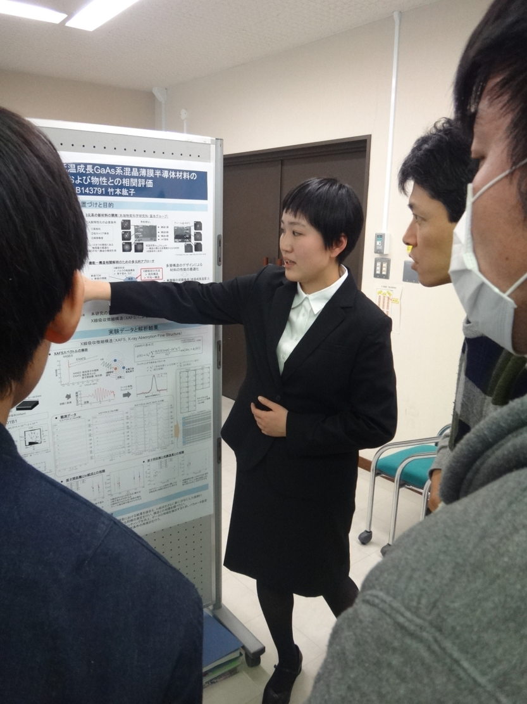
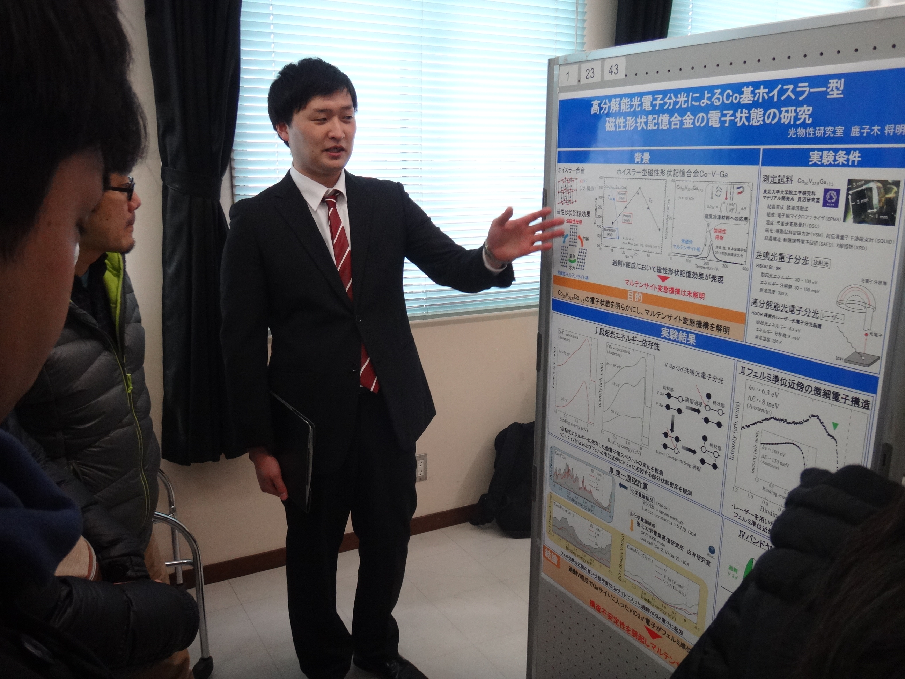
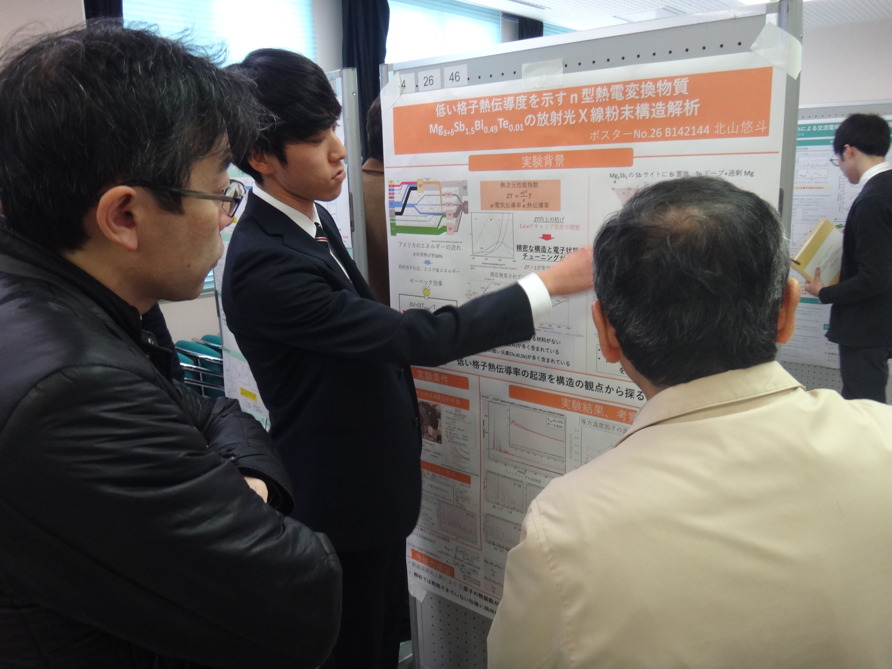
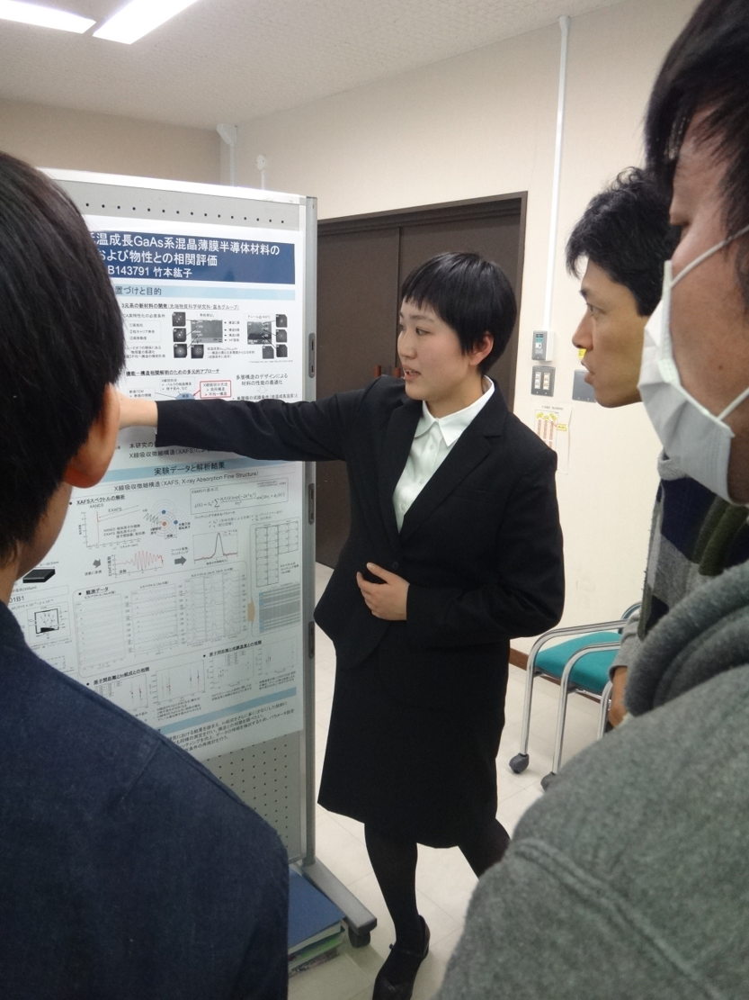

平成29年度卒業論文発表会
光物性研究室から、学部4年生の鹿子木将明、北山悠斗、竹本紘子、計3名が卒業論文発表会にて自分の研究を発表しました。以下がそれぞれの研究内容になります。おつかれさまでした。鹿子木将明：高分解能光電子分光によるCo基ホイスラー型磁性形状記憶合金の電子状態の研究
北山悠斗：低い格子熱伝導度を示すn型熱電変換物質Mg3+δSb1.5Bi0.49Te0.01の放射光X線粉末構造解析
竹本紘子：放射光X線吸収分光法による低温成長GaAs系混晶薄膜半導体材料の構造歪みの解明および物性との相関評価
ポスター発表の様子
鹿子木将明
北山悠斗
竹本紘子


